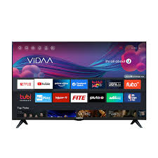
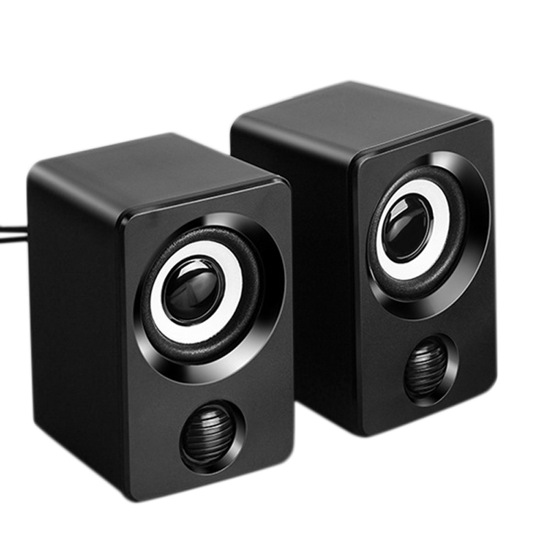

We are selling product
Computer - A computer is a machine that can be programmed to automatically carry out sequences of arithmetic or logical operations. Modern digital electronic computers can perform generic sets of operations known as programs. These programs enable computers to perform a wide range of tasks

Cellphone - A mobile phone or cell phone is a portable telephone that can make and receive calls over a radio frequency link while the user is moving within a telephone service area, as opposed to a fixed location phone.

Smart TV - also known as a connected TV, is a traditional television set with integrated Internet and interactive Web 2.0 features that allow users to stream music and videos, browse the internet, and view photos. Smart TVs are a technological convergence of computers, televisions, and digital media players.
Speaker - A loudspeaker is a combination of one or more speaker drivers, an enclosure, and electrical connections. The speaker driver is an electroacoustic transducer that converts an electrical audio signal into a corresponding sound.
